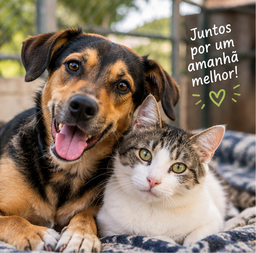
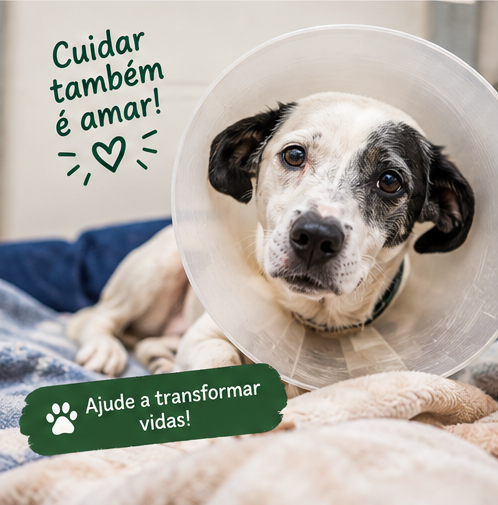
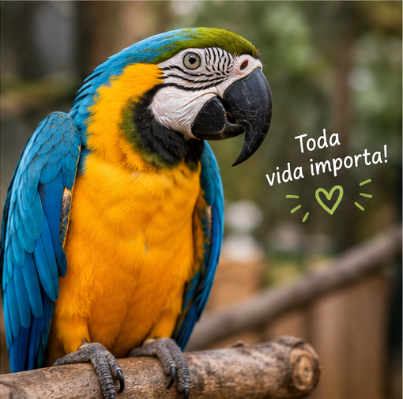
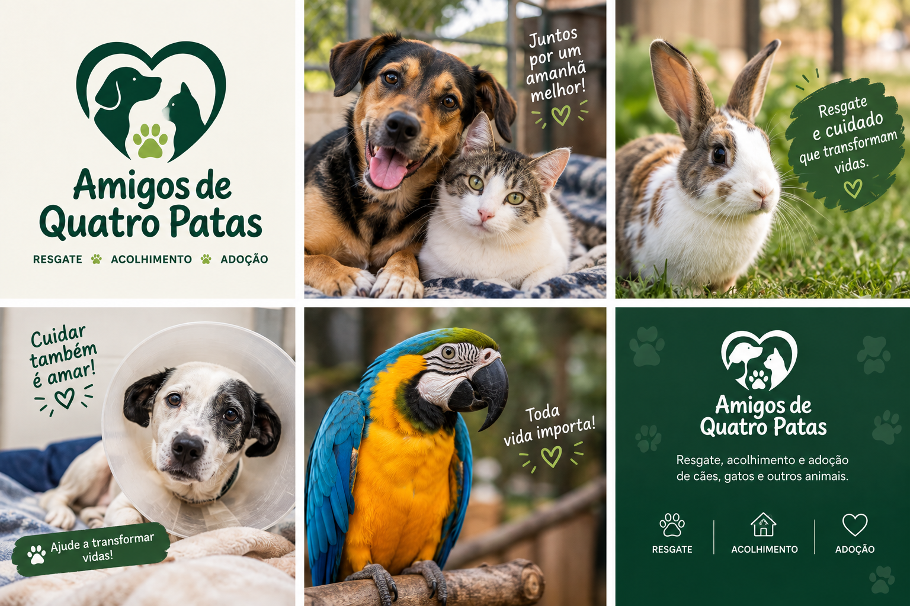
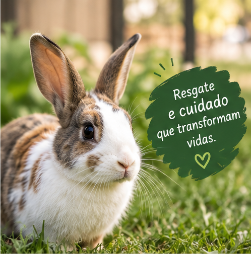

Nossos projetos
A Amigos de Quatro Patas desenvolve ações voltadas ao resgate, acolhimento, cuidado e proteção de cães, gatos e outros animais em situação de vulnerabilidade.

Resgate e acolhimento
ResgateAs ações de resgate buscam oferecer proteção e acolhimento aos animais que precisam de cuidados. Após o resgate, os animais recebem atenção e cuidados necessários até encontrarem uma nova oportunidade de adoção.

Doações
DoaçãoAs doações contribuem para a manutenção das ações da ONG, ajudando nos cuidados, alimentação e demais necessidades dos animais acolhidos.
Para saber como contribuir, entre em contato com a Amigos de Quatro Patas.

Cadastre-se para ajudarVoluntariado
VoluntariadoO trabalho voluntário permite que pessoas interessadas contribuam com as atividades da ONG e auxiliem nas ações de cuidado e proteção dos animais.

Para demonstrar interesse em participar, realize seu cadastro e informe sua forma de participação.
Quero ser voluntárioAdoção responsável
AdoçãoA adoção responsável busca proporcionar aos animais um novo lar com pessoas preparadas para oferecer cuidado, proteção e bem-estar.
Adoção responsável
Antes de adotar, considere se você possui tempo, disponibilidade e condições para oferecer os cuidados necessários ao animal durante toda a sua vida.
Tenho interesse em ajudar